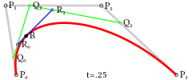
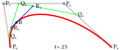

一次贝塞尔曲线其实是一条直线

Canvas的坐标以左上角为原点，水平向右为X轴，垂直向下为Y轴，以像素为单位，所以每个点都是非负整数。
通过创建一个不可见的Canvas来绘图，然后将最终绘制结果复制到页面的可见Canvas中；
尽量使用整数坐标而不是浮点数；
可以创建多个重叠的Canvas绘制不同的层，而不是在一个Canvas中绘制非常复杂的图；
canvas 元素默认被网格所覆盖。通常来说网格中的一个单元相当于 canvas 元素中的一像素。栅格的起点为左上角，坐标为 (0,0) 。
所有元素的位置都相对于原点来定位。所以图中蓝色方形左上角的坐标为距离左边（X 轴）x 像素，距离上边（Y 轴）y 像素，坐标为 (x,y)。
后面我们会涉及到坐标原点的平移、网格的旋转以及缩放等。
背景图片如果不变可以直接用< img>标签并放到最底层。
栅格 (grid) 和坐标空间
如下图所示，canvas 元素默认被网格所覆盖。通常来说网格中的一个单元相当于 canvas 元素中的一像素。
栅格的起点为左上角，坐标为 (0,0) 。所有元素的位置都相对于原点来定位。
所以图中蓝色方形左上角的坐标为距离左边（X 轴）x 像素，距离上边（Y 轴）y 像素，坐标为 (x,y)。
后面我们会涉及到坐标原点的平移、网格的旋转以及缩放等。

<canvas> 只支持一种原生的图形绘制：矩形。
所有其他图形都至少需要生成一种路径 (path)。不过，我们拥有众多路径生成的方法让复杂图形的绘制成为了可能。
canvas 提供了三种方法绘制矩形：
1、fillRect(x, y, width, height)：绘制一个填充的矩形。
2、strokeRect(x, y, width, height)：绘制一个矩形的边框。
3、clearRect(x, y, widh, height)：清除指定的矩形区域，然后这块区域会变的完全透明。
说明：这 3 个方法具有相同的参数。
x, y：指的是矩形的左上角的坐标。(相对于canvas的坐标原点)
width, height：指的是绘制的矩形的宽和高。
图形的基本元素是路径。
路径是通过不同颜色和宽度的线段或曲线相连形成的不同形状的点的集合。
一个路径，甚至一个子路径，都是闭合的。
使用路径绘制图形需要一些额外的步骤：
1.创建路径起始点
2.调用绘制方法去绘制出路径
3.把路径封闭
4.一旦路径生成，通过描边或填充路径区域来渲染图形。
下面是需要用到的方法：
1.beginPath() 新建一条路径，路径一旦创建成功，图形绘制命令被指向到路径上生成路径
2.moveTo(x, y) 把画笔移动到指定的坐标(x, y)。相当于设置路径的起始点坐标。
3.closePath() 闭合路径之后，图形绘制命令又重新指向到上下文中
4.stroke() 通过线条来绘制图形轮廓
5.fill() 通过填充路径的内容区域生成实心的图形
绘制圆弧
有两个方法可以绘制圆弧：
1. arc(x, y, r, startAngle, endAngle, anticlockwise):
以(x, y)为圆心，以r为半径，从 startAngle弧度开始到endAngle弧度结束。anticlosewise是布尔值，true表示逆时针，false表示顺时针(默认是顺时针)。
注意：
1. 这里的度数都是弧度。
2. 0 弧度是指的 x 轴正方形。
radians=(Math.PI/180)*degrees //角度转换成弧度
2、arcTo(x1, y1, x2, y2, radius): 根据给定的控制点和半径画一段圆弧，最后再以直线连接两个控制点。
贝塞尔曲线(Bézier curve)，又称贝兹曲线或贝济埃曲线，是应用于二维图形应用程序的数学曲线。
一般的矢量图形软件通过它来精确画出曲线，贝兹曲线由线段与节点组成，节点是可拖动的支点，线段像可伸缩的皮筋，
我们在绘图工具上看到的钢笔工具就是来做这种矢量曲线的。
贝塞尔曲线是计算机图形学中相当重要的参数曲线，在一些比较成熟的位图软件中也有贝塞尔曲线工具如 PhotoShop 等。
贝塞尔曲线于 1962，由法国工程师皮埃尔·贝塞尔（Pierre Bézier）所广泛发表，他运用贝塞尔曲线来为汽车的主体进行设计。
贝塞尔曲线最初由Paul de Casteljau 于 1959 年运用 de Casteljau 演算法开发，以稳定数值的方法求出贝兹曲线。


 

在前面的绘制矩形章节中，只用到了默认的线条和颜色。
如果想要给图形上色，有两个重要的属性可以做到。
fillStyle = color 设置图形的填充颜色
strokeStyle = color 设置图形轮廓的颜色
说明
1. color 可以是表示 css 颜色值的字符串、渐变对象或者图案对象。
2. 默认情况下，线条和填充颜色都是黑色。
3. 一旦您设置了 strokeStyle 或者 fillStyle 的值，那么这个新值就会成为新绘制的图形的默认值。
如果你要给每个图形上不同的颜色，你需要重新设置 fillStyle 或 strokeStyle 的值。
Transparency(透明度)
globalAlpha = transparencyValue: 这个属性影响到 canvas 里 所有 图形的透明度，
有效的值范围是 0.0 （完全透明）到 1.0（完全不透明），默认是 1.0。
globalAlpha 属性在需要绘制大量拥有相同透明度的图形时候相当高效。
不过，使用rgba()设置透明度更加好一些。
1、line style
线宽。只能是正值。默认是 1.0。
起始点和终点的连线为中心，上下各占线宽的一半。
2. lineCap = type
线条末端样式。
共有 3 个值：
butt：线段末端以方形结束
round：线段末端以圆形结束
square：线段末端以方形结束，但是增加了一个宽度和线段相同，高度是线段厚度一半的矩形区域。
3. lineJoin = type
同一个 path 内，设定线条与线条间接合处的样式。
共有 3 个值 round, bevel 和 miter：
round 通过填充一个额外的，圆心在相连部分末端的扇形，绘制拐角的形状。 圆角的半径是线段的宽度。
bevel 在相连部分的末端填充一个额外的以三角形为底的区域， 每个部分都有各自独立的矩形拐角。
miter(默认) 通过延伸相连部分的外边缘，使其相交于一点，形成一个额外的菱形区域。
4. 虚线
用 setLineDash 方法和 lineDashOffset 属性来制定虚线样式。
setLineDash 方法接受一个数组，来指定线段与间隙的交替；lineDashOffset属性设置起始偏移量。
getLineDash() 返回一个包含当前虚线样式，长度为非负偶数的数组。
绘制文本的两个方法
fillText(text, x, y [, maxWidth]) 在指定的 (x,y) 位置填充指定的文本，绘制的最大宽度是可选的。
strokeText(text, x, y [, maxWidth]) 在指定的 (x,y) 位置绘制文本边框，绘制的最大宽度是可选的。
给文本添加样式
font = value 当前我们用来绘制文本的样式。这个字符串使用和 CSS font 属性相同的语法。 默认的字体是 10px sans-serif。
textAlign = value 文本对齐选项。 可选的值包括：start, end, left, right or center。 默认值是 start。
textBaseline = value 基线对齐选项，可选的值包括：top, hanging, middle, alphabetic, ideographic, bottom。默认值是 alphabetic。。
direction = value 文本方向。可能的值包括：ltr, rtl, inherit。默认值是 inherit。
由零开始创建图片
var img = new Image(); // 创建一个< img>元素
img.src = 'myImage.png'; // 设置图片源地址
绘制 img
ctx.drawImage(img,0,0); // 参数1：要绘制的img, 参数2、3：绘制的img在canvas中的坐标
注意：考虑到图片是从网络加载，如果 drawImage 的时候图片还没有完全加载完成，则什么都不做，个别浏览器会抛异常。所以我们应该保证在 img 绘制完成之后再 drawImage。
var img = new Image(); // 创建img元素
img.onload = function(){
ctx.drawImage(img, 0, 0) // 绘制 img
}
img.src = 'myImage.png'; // 设置图片源地址
img 可以 new 也可以来源于我们页面的 < img>标签。
缩放图片
drawImage(image, x, y, width, height) // 图片 x，y 坐标 width, height 图片尺寸
切片(slice)
drawImage(image, sx, sy, sWidth, sHeight, dx, dy, dWidth, dHeight) // 图片 前4个是定义图像源的切片位置和大小，后4个则是定义切片的目标显示位置和大小。


Saving and restoring state 是绘制复杂图形时必不可少的操作。
save() 和 restore()
save 和 restore 方法是用来保存和恢复 canvas 状态的，都没有参数。
Canvas 的状态就是当前画面应用的所有样式和变形的一个快照。
1、关于 save() ：Canvas状态存储在栈中，每当save()方法被调用后，当前的状态就被推送到栈中保存。
一个绘画状态包括：
1. 当前应用的变形（即移动，旋转和缩放）
2. strokeStyle, fillStyle, globalAlpha, lineWidth, lineCap, lineJoin, miterLimit,
shadowOffsetX, shadowOffsetY, shadowBlur, shadowColor, globalCompositeOperation 的值
3. 当前的裁切路径（clipping path）
*** 可以调用任意多次 save方法(类似数组的 push())。
2、关于restore()：每一次调用 restore 方法，上一个保存的状态就从栈中弹出，所有设定都恢复(类似数组的 pop())。
1、translate 用来移动 canvas 的**原点**到指定的位置
translate(x, y) // x 是左右偏移量，y 是上下偏移量
在做变形之前先保存状态是一个良好的习惯。大多数情况下，调用 restore 方法比手动恢复原先的状态要简单得多。
又如果你是在一个循环中做位移但没有保存和恢复 canvas 的状态，很可能到最后会发现怎么有些东西不见了，那是因为它很可能已经超出 canvas 范围以外了。
注意：translate 移动的是 canvas 的坐标原点(坐标变换)。
2、rotate 旋转坐标轴。
rotate(angle) // angle 旋转的角度 它是顺时针方向的，以弧度为单位的值。旋转的中心是坐标原点。
3、scale 增减图形在 canvas 中的像素数目，对形状，位图进行缩小或者放大。
scale(x, y) // x,y分别是横轴和纵轴的缩放因子，它们都必须是正值。值比 1.0 小表示缩 小，比 1.0 大则表示放大，值为 1.0 时什么效果都没有。
4.transform(变形矩阵)
transform(a, b, c, d, e, f)
a 水平缩放
b 水平偏斜
c 垂直偏斜
d 垂直缩放
e 水平移动
f 垂直移动

globalCompositeOperation = type
在前面的所有例子中、，我们总是将一个图形画在另一个之上，对于其他更多的情况，仅仅这样是远远不够的。
比如，对合成的图形来说，绘制顺序会有限制。不过，我们可以利用 globalCompositeOperation 属性来改变这种状况。
合成
globalCompositeOperation = type
type
1.source-over 默认设置，新图像会覆盖在原有图像。
2.source-in 仅仅会出现新图像与原来图像重叠部分的新图像，其他区域都变成透明的。(包括其他的老图像区域也会透明)
3.source-out 仅仅显示新图像与老图像没有重叠部分的新图像，其余部分全部透明。(老图像也不显示)
4.source-atop 新图像仅仅显示与老图像重叠区域。老图像仍然可以显示。
5.destination-over 新图像会在老图像的下面。
6.destination-in 仅仅新老图像重叠部分的老图像被显示，其他区域全部透明。
7.destination-out 仅仅老图像与新图像没有重叠的部分。 注意显示的是老图像的部分区域。
8.destination-atop 老图像仅仅仅仅显示重叠部分，新图像会显示在老图像的下面。
9.lighter 新老图像都显示，但是重叠区域的颜色做加处理。(每个颜色位进行相加) blue: #0066ff red: #ff6600 所以重叠部分的颜色：#ffccff。
10.darken 保留重叠部分最黑的像素。(每个颜色位进行比较，得到最小的) blue: #0000ff red: #ff0000 所以重叠部分的颜色：#000000。
11.lighten 保证重叠部分最亮的像素。(每个颜色位进行比较，得到最大的) blue: #0000ff red: #ff0000 所以重叠部分的颜色：#ff00ff。
12.xor 重叠部分会变成透明。
13.copy 只有新图像会被保留，其余的全部被清除(边透明)。
裁剪路径
clip()
把已经创建的路径转换成裁剪路径。
裁剪路径的作用是遮罩。只显示裁剪路径内的区域，裁剪路径外的区域会被隐藏。
注意：clip() 只能遮罩在这个方法调用之后绘制的图像，如果是 clip() 方法调用之前绘制的图像，则无法实现遮罩。